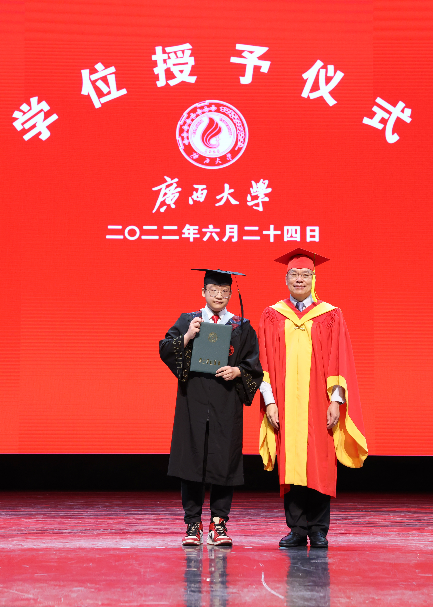

|  | Zhang Zhihui, Msc.. Student |
I am currently a Msc. student at Department of Applied Mathematics, The Hong Kong Polytechnic University (PolyU), under the supervision of Prof. Min Dai since Fall 2023. Previously, I received my Bachelor's Degrees in Financial Mathematics from Guangxi University (GXU) in 2022.
Fianncial Mathematics
Data Science
Stochastic Volitality Inspire
[C4] Peiyu Liao, Hongduo Liu, Yibo Lin, Bei Yu, Martin Wong, “On a Moreau Envelope Wirelength Model for Analytical Global Placement”, ACM/IEEE Design Automation Conference (DAC), San Francisco, Jul. 09–13, 2023.
[C3] Hongduo Liu, Peiyu Liao, Mengchuan Zou, Bowen Pang, Xijun Li, Mingxuan Yuan, Tsung-Yi Ho, Bei Yu, “Layout Decomposition via Boolean Satisfiability”, ACM/IEEE Design Automation Conference (DAC), San Francisco, Jul. 09–13, 2023.
[C2] Guojin Chen, Ziyang Yu, Hongduo Liu, Yuzhe Ma, Bei Yu, “DevelSet: Deep Neural Level Set for Instant Mask optimization”, IEEE/ACM International Conference on Computer-Aided Design (ICCAD), Nov. 1–4, 2021.
[C1] Jiahao Liu, Zhen Zhu, Yong Zhou, Ning Wang, Guanghai Dai, Qingsong Liu, Jianbiao Xiao, Yuxiang Xie, Zirui Zhong, Hongduo Liu, Liang Chang, Jun Zhou, “BioAIP: A Reconfigurable Biomedical AI Processor with Adaptive Learning for Versatile Intelligent Health Monitoring”, IEEE International Solid-State Circuits Conference (ISSCC), Feb. 13–22, 2021.
C++ Engineer
Shenzhen, P.R.China, Aug.2020 - Jun.2021
Full Postgraduate Studentship, CUHK, 2021-2025
Outstanding Graduate, UESTC, 2020
First Class Outstanding Academic Scholarship, UESTC, 2017, 2018, 2019